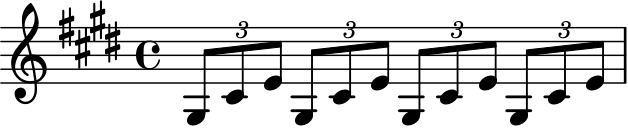
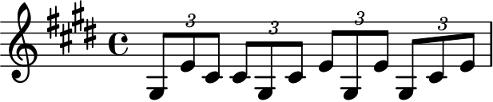
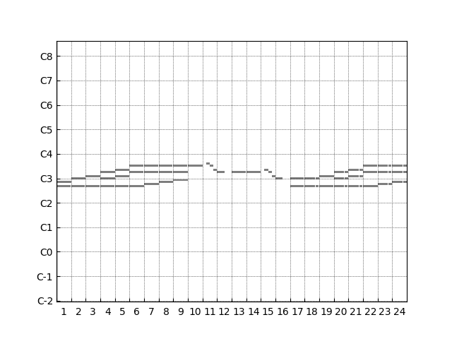
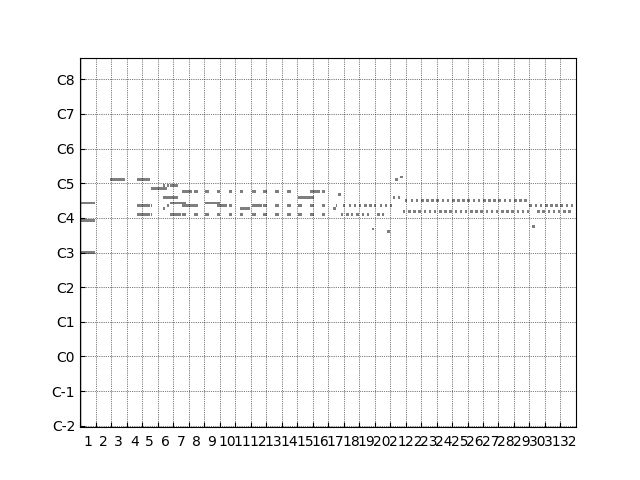
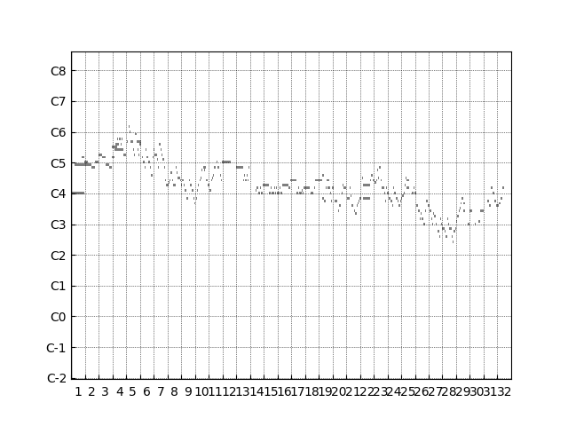
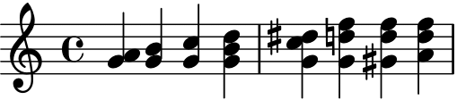
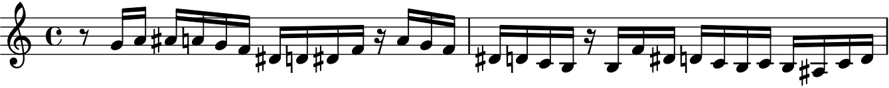
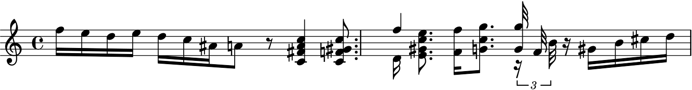

PAUL: An Algorithmic Composer for Classical Piano Music Supporting Multiple Complexity Levels
Abstract
Algorithmic composition (AC) refers to the process of creating music by means of algorithms, either for realising music entirely composed by a computer or with the help of a computer. Several different methods to AC exist, such as mathematical models, evolutionary models, logic-based methods, or learning techniques. As far as the latter are concerned, methods based on neural networks—and in particular using long short-term memory (LSTM) neural networks—prove to be especially successful. In this paper, we report on the development of the system PAUL, an algorithmic composer for the automatic creation of short pieces of classical piano music. It employs an LSTM network to produce the lead track and a so-called sequence-to-sequence neural network for the realisation of the accompanying track. A particular feature of PAUL is that it allows to specify the desired complexity of the output piece in terms of an input parameter. Although PAUL is still work-in-progress, the obtained results are of reasonable to good quality. The designated usage of PAUL is to be part of a tutoring system, teaching piano students how to sight-read music.
Author Keywords
Algorithmic Composition, Neural Networks, Music Education
CCS Concepts
•Applied computing → Computer-assisted instruction; Sound and music computing;
•Computing methodologies → Neural networks;
Introduction
Algorithmic composition (AC), in its most general understanding, denotes the creation of music based on formalisable methods. On the one hand, this can refer to music created by humans based on specific rule sets, like counterpoint or dodecaphony, and, on the other hand, to music created fully automatically in terms of algorithms. Although the latter meaning nowadays refers to music created by a computer or with the help of a computer, the origins of algorithmic composition in its strict, automated sense, predate the modern computer as early as Guido d’Arezzo’s Micrologus de disciplina artis musicae, published around the year of 1025, or Mozart's well-known dice game. While early work in AC using computer programs was pioneered, e.g., by Gottfried Michael Koenig [1], modern AC methods encompass techniques including, but not limited to, Markov models [2], generative grammars [3], transition networks [4], genetic algorithms [5], cellular automata [6], logic-based approaches [7][8][9], and neural networks [10][11] (for a detailed overview about AC, we refer, e.g., to The Oxford Handbook of Algorithmic Music [12]).
With the growing advancement of techniques in artificial intelligence (AI) and machine learning, AC approaches based on neural networks show particular promise in recent years. Examples in this regard include WaveNet [13], MuseGAN [14], MusicVAE [15], or OpenAI’s MuseNet [11], and others [16][17]. Networks employed in several of theses approaches are so-called long short-term memory (LSTMs) units [18], which are powerful recurrent neural network (RNN) architectures particularly useful for processing sequences of data like audio or video signals. Indeed, a particular strength of LSTMs, as far as AC applications is concerned, is their ability to deal with the long-term structure of the generated music. One of the earliest examples of an AC system based on LSTM units is the work by Eck and Schmidhuber [10], where, incidentally, the latter author is actually one of the inventors of LSTMs.
In this paper, we report on the development of an automatic composer program, called PAUL, for the creation of short pieces of classical piano music, based on LSTM units.1 PAUL is trained on a dataset of classical piano pieces including pieces of composers like Mozart, Bach, and Beethoven, taken from the online database at piano-midi.de. The output of PAUL consists of MIDI files containing two distinct tracks, similar to traditional two-handed piano music. While the lead track is generated by means of LSTM units, a so-called sequence-to-sequence (seq2seq) neural network [19] takes care for outputting the accompanying track, depending on the leading track as input. A seq2seq model has the advantage to allow mapping a sequence of one language to a sequence of another, not necessarily of the same length, which is a useful feature for our purpose.
A distinguishing feature of PAUL is that the complexity of the generated output piece can be specified in terms of an input parameter. Here, the complexity refers to the difficulty of playing the generated piece on a regular piano by a human pianist. This complexity specification consists of three different levels, each more difficult and demanding than the preceding one. For example, a very demanding piece should be given a “hard” rating while an introductory piece should receive an “easy” rating. This is done in order to allow for a future use of PAUL in a teaching environment in which programs could be employed in applications for teaching piano students how to sight-read without making use of a fixed set of musical phrases to train on. This way, one could make sure that students rely on their sight-reading capabilities rather than memorise a corpus of musical prompts. Furthermore, due to PAUL’s ability of generating music conforming to the above mentioned complexity specifications, one could make sure that the students would be challenged yet not overwhelmed by the tasks.
Our initial results on the performance of PAUL show that the obtained pieces are of reasonable to good quality and that there is a clear correlation between the specified input complexity and the complexity of the generated output.
Algorithmic Composition Approach
To start our discussion on the details of PAUL, we lay down the structure and functionality of it. PAUL was written using Python 3.7.72 and utilises Tensorflow 2.13 for the neural network architecture and the Python library Mido 1.2.94 for the handling of MIDI files. Our subsequent discussion assumes familiarity with the basic concepts of music theory and MIDI.
Concept
As stated in the introduction, the aim of PAUL is to create musical pieces of a special nature. The output consists of MIDI files representing the generated composition, which can then be translated into a sheet-music representation using a third-party software such as, e.g., Cubase5. PAUL supports the handling of two-track piano pieces, where each track corresponds to a score line in the piano score. These tracks are separately encoded in the MIDI file as well. Additionally, the possibility of defining a desired complexity grade is provided by PAUL. Specifying one of the complexity ratings EASY, MEDIUM, or HARD for each of the tracks (not necessarily the same for both) should result in the generation of pieces that conform to the complexity rating as specified later on.
The consideration behind these measures is to eventually use the system in order to create simple musical phrases, used for sight-reading education purposes. Such an educational program would use the generator PAUL in order to dynamically create new pieces based on the skill level of a student. A streak of correctly played notes would, e.g., result in an increase in difficulty level, successive errors in playing in a lowered difficulty. We note that the resolution of the complexity grading as currently realised in PAUL would most likely have to be refined for such a future application.
In order to generate the musical pieces, PAUL employs a recurrent neural network (RNN) [20] using long short-term (LSTM) units [18] in order to independently generate messages for the right-hand track, and a sequence-to-sequence (seq2seq) neural network [19] that takes as input the generated track and outputs a dependent left-hand track. The RNN is then trained to compose a new lead track based only on, e.g., a few input notes, while the seq2seq network is trained in such a way that it correctly encodes the input lead track and, based on this encoding, is able to generate a fitting accompaniment. This way, it is possible to provide piano students musical pieces similar to real-life examples rather than random amalgamations of notes. We note that seq2seq models are used in fields like speech recognition, machine translation, and question answering [20] and are composed of a combination of two different (recurrent) models, often using LSTM units. One of these networks acts as an encoder, the second one as a decoder. A particular advantage of this model is the fact that the input and output sequences can be of different length.
In order for PAUL to be able to generate pieces of varying complexity, we store three different sets of weights for each of the networks. Each set of weights corresponds to a version of the network that is suited to generate pieces of one of the three complexities. These versions are then only be trained on pieces of similar complexities. The idea is that this way the versions will be able to pick up on the rules that govern the complexity of a piece. In order to generate a new piece, the requested set of weights can then be loaded.
The networks are trained on a preexisting corpus of classical piano pieces, retrieved from the online database at piano-midi.de. In order to provide the networks with enough data, the pieces are split up into bars, which are then individually judged regarding complexity, independently for the right-hand and the left-hand track. This is done in order to ensure an (approximate) equality of the amount of data available for each complexity class.
Data Preprocessing
In order to obtain a basis for the training of the neural networks, a collection of different pieces by five different influential classical composers (viz., Beethoven, Chopin, Mozart, Rachmaninoff, and Schubert) was acquired from the database at piano-midi.de. This database is well-fitted for our approach as it exclusively contains sequenced MIDI files rather than live recordings. This fact is essential for the later processing of the data, as otherwise, e.g., quantisation cannot be done consistently. Furthermore, the sequenced files contain separate tracks corresponding to either the lead or the accompanying track.
As neural networks cannot accept traditional MIDI data as input, a conversion from the MIDI file format to one usable by the input layers of the networks has to be done. In order to represent MIDI files, a representation inspired by Payne’s Clara [21] and general MIDI conventions was chosen for the representation of MIDI. Musical pieces are hereby represented using three different Message Types: play, stop, and wait.
Internal elements and their representation used in the program
Type | Range | Textual Representation | Numeral Representation |
|---|---|---|---|
Padding | n/a | n/a | 0 |
Play | 21-108 | p21-p108 | 1-88 |
Stop | 21-108 | s21-s108 | 89-176 |
Wait | 1-24 | w1-w24 | 177-200 |
Start | n/a | m0 | 201 |
End | n/a | m1 | 202 |
Table 1 shows the different types of elements of such a representation. Here, every entry corresponds to either a played (or lifted) piano key, the amount of ticks to wait, or an identifier for start and stop messages. The textual representation is simply used for readability and feedback, while the numeral representation is used for the input of the neural networks. The program uses 88 different notes in order to model the entire range of a standard piano, and thus makes use of 88 different play (and stop) messages. A play message signals the start of a note and the corresponding stop message the end.
PAUL allows for note and rest values of down to thirty-second triplets. In order to allow for both thirty-second notes and thirty-second triplets, a pulses per quarter note (PPQN) value of 24 was chosen, meaning that a quarter note lasts 24 ticks. Recall that the pulses per quarter note value is part of the MIDI specification and defines the resolution of a quarter note. This specifies the length of thirty-second triplets and thirty-second notes with 2 and 3 ticks, respectively. In order not to dilute the vocabulary, the longest wait value was set to 24 ticks, one quarter rest. Consecutive rests are simply consolidated when converting to MIDI, and split up when converting from MIDI. In order to be able to support every combination of thirty-second notes and triplets, all values in the range of 1 to 24 were used for wait messages. Note values are simply constructed using a combination of play, wait, and stop messages, and rests using only wait messages.
The padding, start, and end messages are used exclusively for the neural networks. The padding message is used in order to provide equally sized sequences within batches (groups of bars are fed to the neural network). The start and end messages are used in the translation of treble sequences to bass sequences by the seq2seq model.
To illustrate this representation, the first bar of the first movement of Beethoven’s Opus 27 was converted from MIDI. The conversion resulted in the following string (given in textual representation in order to improve readability):
p56 w8 s56 p61 w8 s61 p64 w8 p56 s64 w8 s56 p61 w8 s61 p64 w8 p56 s64 w8 s56 p61 w8 s61 p64 w8 p56 s64 w8 s56 p61 w8 s61 p64 w8 s64
The pipeline of importing and processing a MIDI file then consists of the following steps:
conversion (converting MIDI messages to the internal format);
quantisation (fitting the start and end of every message to a fixed-size grid);
splitting into equal time signatures (split along time signature changes);
adjustment (ensure that sequence represents a valid MIDI file);
splitting into bars (similar approach to time signatures, split messages that linger across two bars);
complexity assessment (assign a complexity score to each bar); and
consolidation of adjacent complexity classes (consolidate to a maximum length of 4 bars, in order to provide network with lengthier examples).
For space reasons, in what follows we will only go detail some of these steps; more details are given in the full version of this paper.
Quantisation
In order to ensure that, when splitting along bars, for example, the recognition of musical patterns or other processes work as intended, we apply quantisation, i.e., the start and end of every note and rest is fitted (perfectly) to a fixed-size grid—in our case, a combination of thirty-second notes and thirty-second triplets. In order to quantise a sequence, it is first converted to an absolute representation. Rather than a combination of play, stop, and wait messages, each event is assigned a fixed point in time. During the iteration over all the elements of the sequence, the value representing the point in time of a message is then quantised. The messages with the quantised values are inserted into a new absolute sequence which is then converted back to the previously mentioned format.
Splitting into Equal Time Signatures
Musical pieces do not have to have one consistent time signature over the course of the entire composition. It is not unusual for composers to change the time signature, even a few times over the course of a piece. Due to the fact that the program relies on splitting compositions into its bars, and the capacity of these bars relies heavily on time signatures, it is important to split a MIDI file into parts of different time signatures as well. In order to do so, the absolute timings of time signature changes are extracted. Signature changes are encoded as MIDI messages and can be converted in a similar fashion to normal play, stop, and wait messages. These timings are then used to iteratively split a sequence into two parts, where the first part is guaranteed to only contain bars of the same time signature.
The algorithm how PAUL handle theses splits is described below. It takes as input parameter a capacity specifying how “long” the first part of the output should be. For example, we could pass a value of 192, which (due to the fact that we chose a PPQN of 24) would correspond to a split after 8 quarter notes. Combined with the knowledge when and which time signature changes occur, the algorithm calculates the capacity and location of the split accordingly.
We are passed both an original sequence and a point to split at (this, e.g., corresponds to the point where the time signature change occurs), which defines the capacity of the desired sequence.
We initialise two new (empty) sequences, head and tail, which after the procedure should contain all the messages up to the specified point for the former one, and the rest of the original sequence for the latter one. Furthermore, we add all messages of the original sequence to an initial queue.
We then proceed with the following steps, carrying them out as long as we still have elements in either our initial or carry queue:
First, we check whether we have some notes left in our carry queue, and whether we already have the head sequence filled to capacity. If this is the case, we switch to working on the tail sequence from this point on.
We then retrieve one element out of the carry queue if it is not empty, otherwise we take an element out of the initial queue.
We then have to look at the type of message we have taken, and, depending on its type, proceed as follows:
If it was a stop message, we can safely add it to the current working sequence.
If it was a play message, and we still have some capacity left, we add it to the working sequence. Otherwise, we add it to the carry queue.
If it was a wait message, we check whether we have enough capacity left to fit the message in its entirety.
If this is the case, we can safely add it to the working sequence, and move on to the next element.
If not, we determine which fraction of it can fit, and how much will protrude. We then add the part that can still fit to the current sequence, and stop all notes that have not yet been stopped. Furthermore, we add all of these notes to the carry queue, in order to restart them in the tail sequence. We then add the remaining part of the current wait message to the carry queue.
We return the now filled head and tail sequences.
Splitting into bars works analogously, here the capacity is defined only by the time signature of the bar.
Complexity Assessment
In this step, each bar is assigned a complexity value from the set {EASY, MEDIUM, HARD}. Note that the complexity is judged separately for each hand; these judgements are not dependent on each other.
The complexity assessment is done on the basis of four different metrics, viz., in descending order of importance:
the average time of note and rest values;
the pattern of the elements;
the amount of concurrently played notes; and
the amount of note classes.
Table 2 shows the amount of each complexity class per track in the training corpus judged using our criteria. Bars of the complexity rating MEDIUM make for about 50% of all the bars, the other two classes for the remaining half.
Amount of complexity classes in the used corpus
Track | Complexity | Amount | Proportion (rel. to Track) |
|---|---|---|---|
Right Hand | Easy | 2263 | 29.6% |
Medium | 3752 | 49.1% | |
Hard | 1630 | 21.3% | |
Left Hand | Easy | 2810 | 36.8% |
Medium | 3883 | 50.8% | |
Hard | 952 | 12.5% |
It is interesting to note that the amount of bars rated HARD is lower for the bass track than the treble one. This can be explained that for piano music, the bass track is often used in order to accompany the melody played by the lead one, thus it is sometimes less complex.
In what follows, we provide a short description of the four different metrics.
Average Note and Rest Values
This metric is based upon the average time of wait messages in a bar. A lower average wait time implies lower note and rest values, which in turn imply a more complex piece. Pieces with lower note and rest values are arguably harder to play, due to the fact that more notes have to be read and played in the same amount of time. In this assessment adjacent rests are consolidated, in order not to artificially lower the average wait time (e.g., is lower than , even though the same amount of time is represented).
For our assessment, average wait times of greater or equal to 18 (which implies a majority of quarter notes) are evaluated with EASY. An average wait time of greater than 12 ticks is evaluated with MEDIUM, while values lower than these with HARD.
Note Patterns
Patterns and repetitions of musical elements can make playing a score considerably easier. Take for instance the two bars represented below. Both of these bars consist of the same notes, an extract of Beethoven’s Opus 27 No. 2, first movement, arranged in two different ways: while Figure 1 is a one-to-one copy of the mentioned piece, Figure 2 consist of randomly swapped positions of the elements. Even to the untrained eye, it will be obvious that the second piece is considerably more difficult to play.


An easy pattern


A more complex pattern
PAUL uses regular expressions in order to detect patterns in sequences, and judges their complexity based on these observations.6 We omit a description of this process and refer to the full version of this paper for more details.
Concurrent Notes
Playing several notes at the same point in time does not result in a lower average note or rest value, but does increase the complexity of the piece. Reading multiple notes at one time requires recognition of patterns like chords, and the sight-reading of more notes in general.
This metric is based upon the average number of notes played between wait and stop messages. It returns a complexity rating of EASY if the average is less than or equal to 2, MEDIUM if it is less than or equal to 3.5, and HARD otherwise.
Note Classes
Although the sequence represented in Figure 2 is definitely harder to play than the one represented in Figure 1, it still consists of the same notes, and more experienced players will have no difficulties with it. Had the pitches of the sequence changed (in a way that would not result in an easier pattern), the previous metrics would not have estimated it to be more complex. This is why we consider the amount of different note classes played as well. This metric does not consider C3 and C4 for instance to be the same note.
A value of 4 or less note classes in a bar is assessed as EASY, 8 or less as MEDIUM, and everything above that as HARD.
Neural Network Training and Generation
As stated previously, two different kinds of neural networks are employed in PAUL: a recurrent network using LSTMs in order to create the treble or lead sequences, and a seq2seq model in order to generate the bass or accompanying sequences. In what follows, we give a brief discussion how these networks were generated and trained, as well as analyse the created music files.
To begin with, as far as the technical side is concerned, let us note that both networks were created in Python using the Tensorflow API, and trained on either an NVIDIA GeForce GTX 1060 (6GB model)7 locally, or an NVIDIA Tesla K808, made available through Microsoft’s Azure9 platform.
Treble Sequences Generation
A three-hidden-layer architecture, consisting of an embedding layer, three LSTM layers with dropout layers prepended after each, and a dense output layer was employed. After embedding an input using 32 dimensions, it gets passed through the hidden layers, each with a size of 1024 nodes per layer. A dropout of 20% is applied after each LSTM layer, in order to combat overfitting.
The input data is split into two different sets, consisting of input and target values. The network is then trained to predict the next word in a sequence—in our case, the next play, stop, or wait message in the composition.
After training the network, new sequences can be generated using a primer of one or more start messages. Here, categorical sampling of the predictions was used, where each output has a chance to be drawn proportional to its confidence level. Training this network took approximately 4 to 6 hours per complexity rating. Doubling the amount of layers and nodes (like in the seq2seq model) resulted in an exponentially higher training duration and hardware requirement, and exceeded the limits of the employed GPU.
Bass Sequences Generation
As mentioned, a seq2seq model was employed to manage the task of the generation of the bass sequences. In a similar fashion to the conventional model, both the encoder and decoder of the seq2seq unit consist of an embedding layer with 32 dimensions and three LSTM layers with 1024 nodes and a dropout of 20% each. A dense output layer is prepended to the decoder model, in order to generate the sequences.
Due to the much larger network size, training this model demanded significantly more resources compared to the traditional one. Training the network on the local GPU was only possible on the EASY rating. Higher complexities had to be trained on a rented virtual machine from the Azure platform. This way half of an NVIDIA Tesla K80 could be utilised.
The MEDIUM model was trained for around 40 hours, resulting in only 10 completed epochs. An epoch consists of feeding the entire dataset to the network once. In comparison, the networks for the treble sequences could be trained for 30 epochs or more.
The generation of sequences works analogously to the treble sequences, with the exception that bass sequences need a full treble sequence as input, rather than a primer consisting of possibly few words.
Discussion of the Generated Music Files
As for an assessment of the music files created by PAUL, we first of all note that a clear difference in quality between treble and bass tracks can be observed.
The generated treble (right hand) sequences are of good, sometimes even great quality. Figure 3, Figure 4, and Figure 5 show different examples generated with the treble model using each of the complexity ratings in a piano roll visualisation. Audio 1, Audio 2, and Audio 3 are the respective audio files generated from the MIDI sources.


Piano roll of Easy 01 Instance
Easy 01 audio example


Piano roll of Medium 01 Instance
Medium 01 audio example


Piano roll of Hard 01 Instance
Hard 01 audio example
Figure 6, Figure 7, and Figure 8 show the musical notation of two bars from (other) example instances generated for each complexity. The generated MIDI files were not transposed, and no accidental-reducing key was chosen. As a result, these excerpts may appear more difficult (regarding conventional standards) than if these measures had been taken. PAUL does not consider accidentals regarding complexity. Apart from the aforementioned metric, a clear correlation between primed complexity and complexity regarding sight-reading can be observed.
One weakness of the network lies in stopping some previously played notes. Sometimes, a few notes drag on until the end of the generated piece, cluttering visual representation. In order to combat this phenomenon, a limit to maximum note length was introduced. For these examples, the limit was set to 24 (the length of a quarter note).


Instance generated using primed complexity of EASY


Instance generated using primed complexity of MEDIUM


Instance generated using primed complexity of HARD
Interesting results regarding the complexity rating can be observed. Table 3 shows the results of generating 80 bars per complexity class and judging these bars regarding their complexity, in order to check if the network really is capable of generating pieces that belong to a given complexity.
Amount of complexity classes generated when primed with a specific class, measured on 80 bars
Primed Complexity | Easy | Medium | Hard |
|---|---|---|---|
Easy | 60 (75%) | 19 (23.75%) | 1 (1.25%) |
Medium | 9 (11.25%) | 52 (65%) | 19 (23.75%) |
Hard | 2 (2.5%) | 11 (13.75%) | 67 (83.75%) |
A clear trend regarding primed complexity and output complexities is visible. Both EASY and HARD complexities generate their respective complexity about three quarters of the time, and almost never complexities on the other end of the spectrum. MEDIUM complexity generation is a bit more scattered. About two thirds of the time the same complexity is generated, but almost every fourth time a HARD bar is generated.
In order to combat misaligned complexity for practical uses, the bar can simply be generated anew, as often as needed in order to produce a bar of the desired complexity. It is important to note at this point that our approach is not deterministic but rather drawing from a set of possible notes with a certain probability determined by the network. Notes that the network deems to be more well-fitted have a higher chance of being drawn, but more unfit notes will be selected from time to time.
Independently of whether or not the used metrics accurately describe the “real” complexity of pieces, the networks are capable of generating pieces conforming to the implemented measurements.
At the time of publication the results currently produced by the bass track generator are not as good as the treble ones. Although a network with three layers for each the encoder and decoder is capable of generating messages, these do not translate to MIDI well. Although a clear relationship of playing one note, stopping it, and then playing another one can be observed, only few wait messages are being generated. This results in the generated tracks not having sufficient temporal structure. Due to this fact, evaluations of the bass sequences are not yet possible.
Conclusion and Outlook
In this paper, we reported about the development and main features of the algorithmic composer PAUL, a system capable of generating classical piano music based on a primer and complexity rating. PAUL is work-in-progress and its main aim for future applications is to be used within a tutoring system helping piano students how to sight read sheet music. PAUL works on the basis of preprocessed MIDI files converted to an internal format, representing musical sequences.
Although the lead track shows already reasonable to good quality, in future work we plan to improve the overall performance of the system, particularly concerning the generation of the bass track. A reason for the somewhat sub-par performance of the bass network could be wrong hyperparameters such as a too small network size or a too low amount of epochs. Another possibility for a potential improvement would be to use the recently introduced transformer neural network model, as introduced by Vaswani et al. [22]. Other algorithmic composer approaches, such as the Music Transformer [23] or MuseNet [11], have successfully produced promising results using this architecture.
Ethics Statement
All research conducted as part of this work was carried out in accordance to the ethics policies of our university. We, the authors, have no financial interest in any company whose products were used during the research, as well as no finanancial interest concerning the system itself. Moreover, we have no conflict of interest with any systems or work which is similar to the results reported in this paper, or with any researchers working on similar topics. As well, we received no funding concerning the reported work. Furthermore, the results reported in this paper were obtained as part of the work on the Bachelor’s thesis of the first author, with the second author as advisor. The presented system is publicly available, along with its source code. Hence, everyone is invited to use, extend, or adapt the system as desired. Finally, a large amount of electricity used to train the networks of the presented system stems from sustainable and environmentally friendly sources, such as solar energy, since the computations were largely run on local devices. Furthermore, certain local devices (such as graphic cards needed to train the networks) were bought from the second-hand market, reducing the amount of electronic waste that could result from such operations.
Footnotes
The name of the program refers to the famous Viennese pianist Paul Badura-Skoda (1927-2019).
↩- ↩
- ↩
- ↩
- ↩
Regular expressions are syntactic elements used for specifying search patterns; they were first introduced by the mathematician Stephen Cole Kleene in the 1950s.
↩https://www.nvidia.com/en-in/geforce/products/10series/geforce-gtx-1060/
↩- ↩
- ↩
References
- ↩Gottstein, B. (2006). Gottfried Michael Koenig: Die Logik der Maschine. In B. Gottstein (Ed.), Musik als Ars Scientia. Die Edgard-Varèse-Gastprofessoren des DAAD an der TU Berlin 2000–2006. Saarbrücken: Pfau Verlag.
- ↩Gillick, J., Tang, K., & Keller, R. M. (2010). Machine Learning of Jazz Grammars. Computer Music Journal, 34(3), 56–66. https://doi.org/10.1162/COMJ\_a\_00006
- ↩Kitani, K. M., & Koike, H. (2010). ImprovGenerator: Online Grammatical Induction for On-the-Fly Improvisation Accompaniment. Proceedings of the 10th International Conference on New Interfaces for Musical Expression (NIME 2010), 469–472. nime.org. Retrieved from http://www.nime.org/proceedings/2010/nime2010%5C_469.pdf
- ↩Cope, D. (1992). Computer Modeling of Musical Intelligence in EMI. Computer Music Journal, 16(2), 69–83. Retrieved from http://www.jstor.org/stable/3680717
- ↩Burton, A. R., & Vladimirova, T. (1999). Generation of Musical Sequences with Genetic Techniques. Computer Music Journal, 23(4), 59–73. https://doi.org/10.1162/014892699560001
- ↩Bilotta, E., Miranda, E. R., Pantano, P. S., & Todd, P. M. (2002). Artificial Life Models for Musical Applications: Workshop Report. Artificial Life, 8(1), 83–86. https://doi.org/10.1162/106454602753694774
- ↩Boenn, G., Brain, M., Vos, M. D., & Fitch, J. P. (2011). Automatic Music Composition Using Answer Set Programming. Theory and Practice of Logic Programming, 11(2–3), 397–427. Retrieved from https://doi.org/10.1017/S1471068410000530
- ↩Everardo, F., & Aguilera, A. (2011). Armin: Automatic Trance Music Composition using Answer Set Programming. Fundamenta Informaticae, 113, 79–96. https://doi.org/10.3233/FI-2011-600
- ↩Opolka, S., Obermeier, P., & Schaub, T. (2015). Automatic Genre-Dependent Composition using Answer Set Programming. In T. Schiphorst & P. Pasquier (Eds.), Proceedings of the Twenty-First International Symposium on Electronic Art (ISEA 2015) (pp. 627–632). Brighton, UK: ISEA International.
- ↩Eck, D., & Schmidhuber, J. (2002). Finding Temporal Structure in Music: Blues Improvisation with LSTM Recurrent Networks. Proceedings of the 12th IEEE Workshop on Neural Networks for Signal Processing (NNSP 2002), 747–756. IEEE. https://doi.org/10.1109/NNSP.2002.1030094
Payne, Christine. “MuseNet.” OpenAI, 25 Apr. 2019, openai.com/blog/musenet
↩- ↩McLean, A., & Dean, R. T. (Eds.). (2018). The Oxford Handbook of Algorithmic Music. Oxford: Oxford University Press.
- ↩van den Oord, A., Dieleman, S., Zen, H., Simonyan, K., Vinyals, O., Graves, A., … Kavukcuoglu, K. (2016). WaveNet: A Generative Model for Raw Audio. Proceedings of the 9th ISCA Workshop on Speech Synthesis (SSW 2016), 125. ISCA. Retrieved from http://www.isca-speech.org/archive/SSW%5C_2016/abstracts/ssw9%5C_DS-4%5C_van%5C_den%5C_Oord.html
- ↩Dong, H.-W., Hsiao, W.-Y., Yang, L.-C., & Yang, Y.-H. (2018). MuseGAN: Multi-track Sequential Generative Adversarial Networks for Symbolic Music Generation and Accompaniment. In S. A. McIlraith & K. Q. Weinberger (Eds.), Proceedings of the Thirty-Second AAAI Conference on Artificial Intelligence (AAAI 2018) (pp. 34–41). AAAI Press. Retrieved from https://www.aaai.org/ocs/index.php/AAAI/AAAI18/paper/view/17286
- ↩Roberts, A., Engel, J. H., Raffel, C., Hawthorne, C., & Eck, D. (2018). A Hierarchical Latent Vector Model for Learning Long-Term Structure in Music. In J. G. Dy & A. Krause (Eds.), Proceedings of the 35th International Conference on Machine Learning (ICML 2018) (pp. 4361–4370). PMLR. Retrieved from http://proceedings.mlr.press/v80/roberts18a.html
- ↩Choi, K., Fazekas, G., & Sandler, M. B. (2016). Text-based LSTM networks for Automatic Music Composition. CoRR, abs/1604.05358. Retrieved from http://arxiv.org/abs/1604.05358
- ↩Faitas, A., Baumann, S. E., Næss, T. R., Tørresen, J., & Martin, C. P. (2019). Generating Convincing Harmony Parts with Simple Long Short-Term Memory Networks. Proceedings of the 19th International Conference on New Interfaces for Musical Expression (NIME 2019), 325–330. nime.org. Retrieved from http://www.nime.org/proceedings/2019/nime2019%5C_paper062.pdf
- ↩Hochreiter, S., & Schmidhuber, J. (1997). Long Short-Term Memory. Neural Computation, 9(8), 1735–1780. https://doi.org/10.1162/neco.1997.9.8.1735
- ↩Sutskever, I., Vinyals, O., & Le, Q. V. (2014). Sequence to Sequence Learning with Neural Networks. In Z. Ghahramani, M. Welling, C. Cortes, N. D. Lawrence, & K. Q. Weinberger (Eds.), Proceedings of the 27th Annual Conference on Neural Information Processing Systems (NIPS 2014) (pp. 3104–3112). Retrieved from http://papers.nips.cc/paper/5346-sequence-to-sequence-learning-with-neural-networks
- ↩Goodfellow, I., Bengio, Y., & Courville, A. (2016). Deep Learning. Cambridge, Massachusetts: The MIT Press.
- ↩Payne, C. (2018). Clara: Generating Polyphonic and Multi-Instrument Music Using an AWD-LSTM Architecture. http://www.christinemcleavey.com/files/clara-musical-lstm.pdf. Retrieved from http://www.christinemcleavey.com/files/clara-musical-lstm.pdf
- ↩Vaswani, A., Shazeer, N., Parmar, N., Uszkoreit, J., Jones, L., Gomez, A. N., … Polosukhin, I. (2017). Attention is All you Need. In I. Guyon, U. von Luxburg, S. Bengio, H. M. Wallach, R. Fergus, S. V. N. Vishwanathan, & R. Garnett (Eds.), Proceedings of the 30th Annual Conference on Neural Information Processing Systems (NIPS 2017) (pp. 5998–6008). Retrieved from http://papers.nips.cc/paper/7181-attention-is-all-you-need
- ↩Huang, C.-Z. A., Vaswani, A., Uszkoreit, J., Simon, I., Hawthorne, C., Shazeer, N., … Eck, D. (2019). Music Transformer: Generating Music with Long-Term Structure. 7th International Conference on Learning Representations (ICLR 2019). OpenReview.net. Retrieved from https://openreview.net/forum?id=rJe4ShAcF7